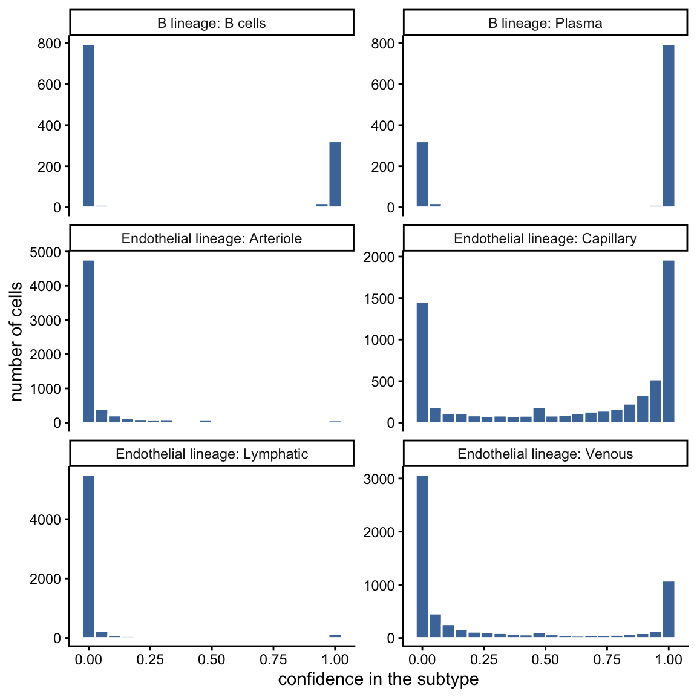
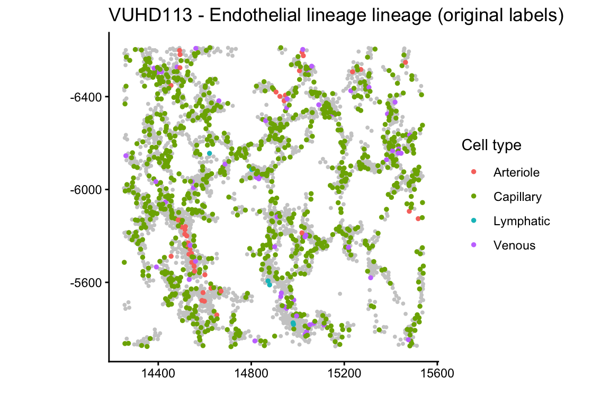
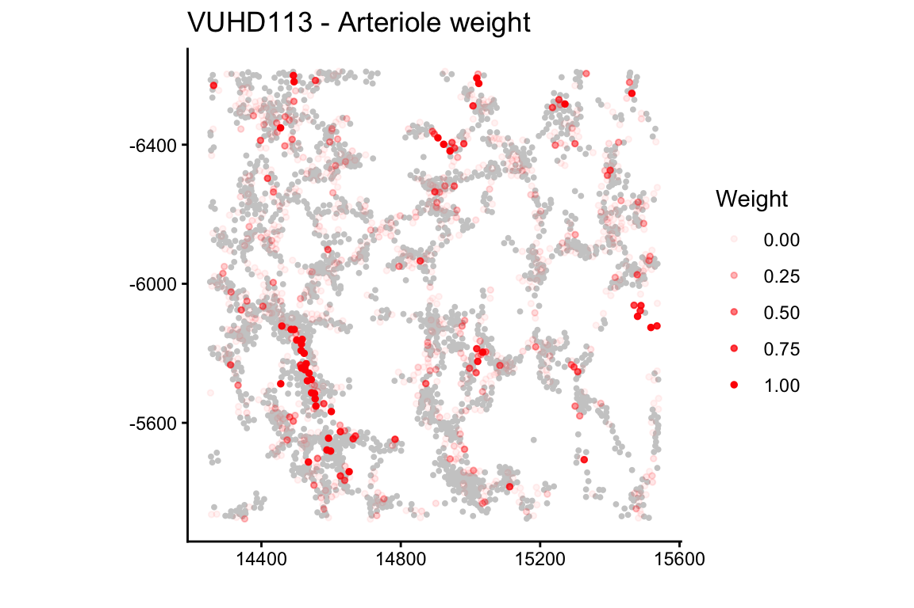
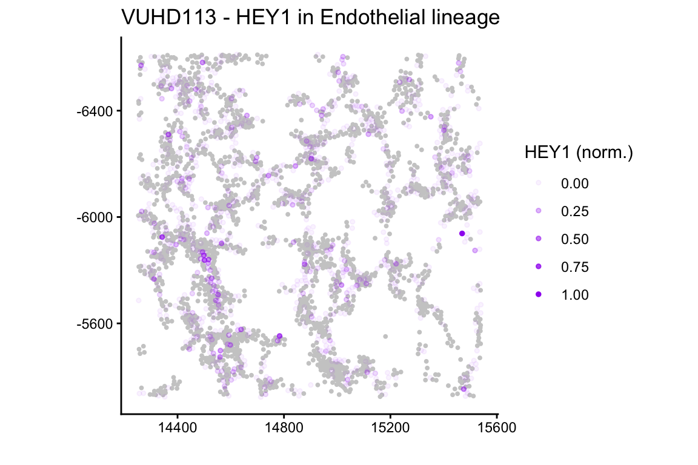
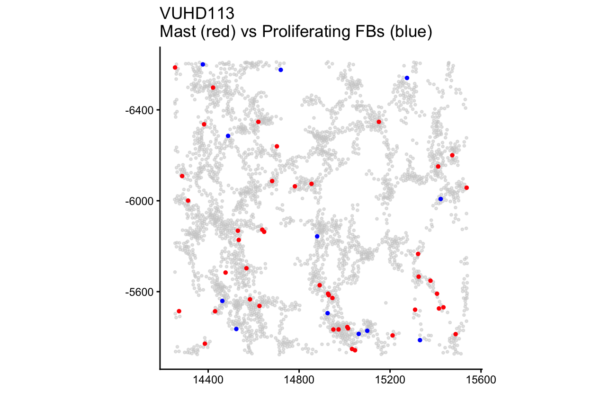
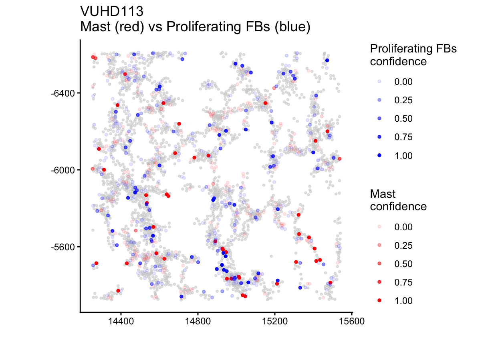
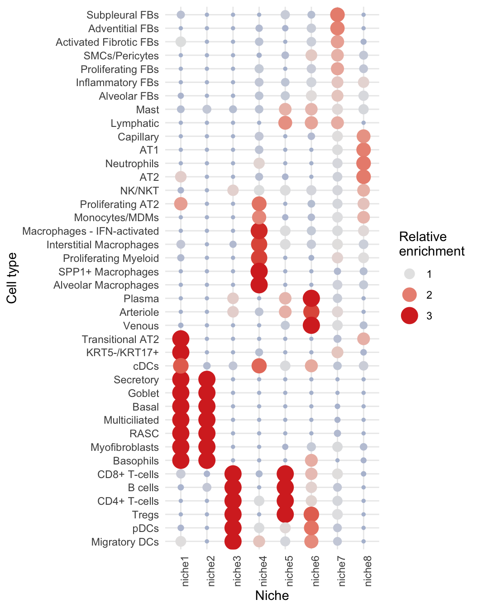
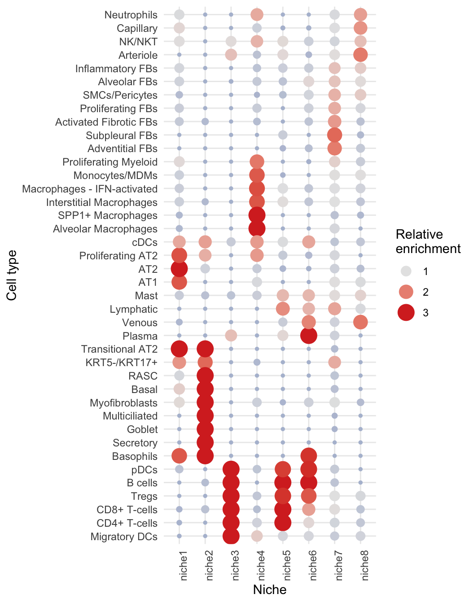
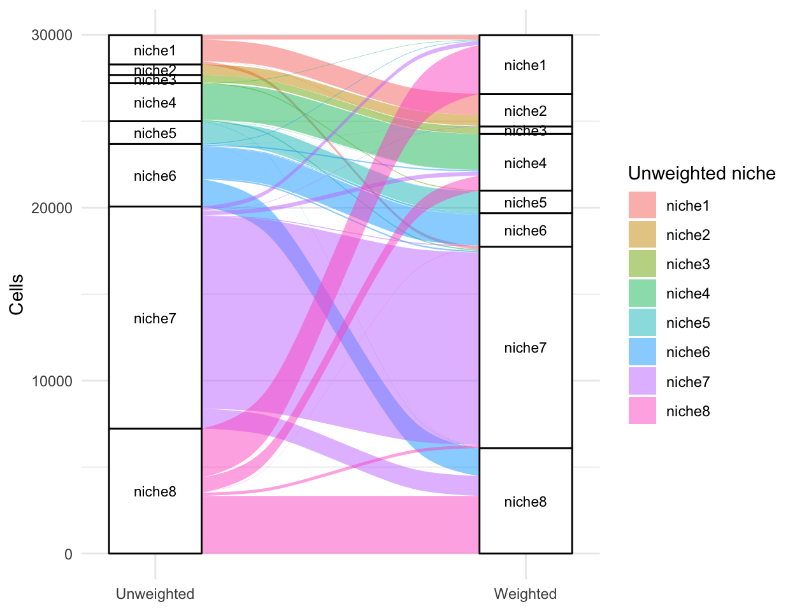
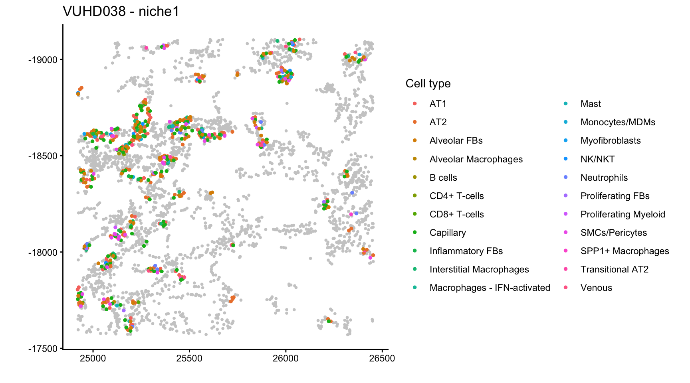

if (!requireNamespace("BiocManager", quietly = TRUE)) {
install.packages("BiocManager")
}
BiocManager::install("fuzzyCell")1 Overview
Cell type annotation in spatial transcriptomics data is subject to considerable uncertainty. Transcript diffusion and imperfect segmentation assign transcripts to neighbouring cells, and limited gene panels yield sparse expression profiles, so closely related subtypes such as CD4+ and CD8+ T cells are frequently misclassified. Downstream analyses nonetheless typically treat annotations as fixed, and this uncertainty propagates, unaccounted for, into estimates of cell type proportions, co-localisation and niche composition.
fuzzyCell quantifies this uncertainty by bootstrapping. Within each group of closely related subtypes, a classifier is trained on the original annotations, and each cell is repeatedly reclassified after multinomial resampling of its transcript counts. The proportion of resamples in which a cell is assigned to a subtype defines its confidence in that subtype. These confidences serve as soft cell type weights: each cell contributes to every subtype of its group in proportion to its confidence, rather than to a single label. Each analysis can be performed with the original annotations (unweighted) and with the confidence weights (weighted), and comparing the two identifies conclusions that are sensitive to annotation uncertainty.
| If you want to know… | Use | Built on |
|---|---|---|
| whether a cell type’s proportion differs between outcomes |
runProportionsPipeline(), runProportionsRelativeToParentPipeline()
|
linear models of image-level proportions |
| whether two cell types co-localise more or less between outcomes | runColocalisationModels() |
spicyR’s L-function, and Statial’s Kontextual test for relative co-localisation |
| whether tissue neighbourhoods (niches) differ between outcomes |
runNicheIdentification(), testNicheOutcome()
|
lisaClust |
The rest of this vignette follows the workflow on a real dataset.
2 Installation
3 Example data: lung biopsies
We follow the whole workflow on Xenium lung biopsies from patients with pulmonary fibrosis and from controls (Vannan et al., 2025). The full data are available as SpatialDatasets::spe_Vannan_2025(). The package includes a small subset, lungSubset: five control and five disease biopsies, each cropped to a window of about 3,000 cells at its centre. Every image comes from a different patient, and disease_status records whether the patient is a control or has pulmonary fibrosis.
library(fuzzyCell)
library(SpatialExperiment)
library(ggplot2)
data(lungSubset)
spe = lungSubset
spe
#> class: SpatialExperiment
#> dim: 343 29971
#> metadata(0):
#> assays(1): counts
#> rownames(343): ABCC2 ACKR1 ... YAP1 ZEB1
#> rowData names(0):
#> colnames(29971): TILD167LA_aiflfbgd-1 TILD167LA_aifmhkpg-1 ...
#> VUILD105MA2_aaaafoki-1 VUILD105MA2_aaaafokj-1
#> colData names(6): cellID imageID ... disease_status sample_id
#> reducedDimNames(0):
#> mainExpName: NULL
#> altExpNames(0):
#> spatialCoords names(2) : x y
#> imgData names(0):
# one image (and one outcome) per patient
imageOutcome = unique(colData(spe)[, c("imageID", "disease_status")])
table(imageOutcome$disease_status)
#>
#> Control Disease
#> 5 5Note
Any
SummarizedExperiment(such as aSpatialExperiment) works as long as it has a"counts"assay and the cell metadata columnscellID,imageID,cellType,xandyin itscolData. If your columns are named differently, the analysis functions take arguments (such ascellTypeandimageID) giving the column names.
4 The cell type tree
Confidence scores are estimated only between closely related cell types, so fuzzyCell requires a hierarchy specifying which subtypes may be confused with one another. The hierarchy is supplied as a nested list. A group of subtypes to be refined together is specified as list(children = ...); every other entry is either an organisational level (such as the lineage "Immune") or a leaf cell type that is not refined (such as "SMCs/Pericytes"). Each top-level entry must be named. The cell type tree for the lung data is defined as follows:
tree = list(
"Immune" = list(
"Myeloid" = list(
"Macrophage lineage" = list(children = c("Alveolar Macrophages",
"Interstitial Macrophages", "SPP1+ Macrophages",
"Macrophages - IFN-activated", "Monocytes/MDMs")),
"Dendritic cells" = list(children = c("cDCs", "Migratory DCs",
"Langerhans cells", "pDCs")),
"Granulocytes" = list(children = c("Mast", "Basophils", "Neutrophils")),
"Proliferating Myeloid"),
"Lymphoid" = list(
"T cells" = list(children = c("CD4+ T-cells", "CD8+ T-cells", "Tregs",
"Proliferating T-cells")),
"NK lineage" = list(children = c("NK/NKT", "Proliferating NK/NKT")),
"B lineage" = list(children = c("B cells", "Plasma",
"Proliferating B cells")))),
"Mesenchymal" = list(
"Fibroblast lineage" = list(children = c("Alveolar FBs", "Adventitial FBs",
"Activated Fibrotic FBs", "Inflammatory FBs", "Subpleural FBs",
"Proliferating FBs", "Myofibroblasts")),
"SMCs/Pericytes",
"Mesothelial"),
"Endothelial lineage" = list(children = c("Arteriole", "Venous", "Capillary",
"Lymphatic")),
"Epithelial lineage" = list(
"Alveolar" = list(children = c("AT1", "AT2", "Transitional AT2",
"Proliferating AT2")),
"Airway" = list(children = c("Basal", "Secretory", "Goblet", "Multiciliated",
"RASC", "PNEC", "KRT5-/KRT17+", "Proliferating Airway"))))
buildCellTypeMap(tree)$groupsWithChildren
#> [1] "Macrophage lineage" "Dendritic cells" "Granulocytes"
#> [4] "T cells" "NK lineage" "B lineage"
#> [7] "Fibroblast lineage" "Endothelial lineage" "Alveolar"
#> [10] "Airway"The same tree is included in the package and can be loaded with data(lungCellTypeTree). Each of the groups listed above can receive confidence scores. Cell types outside a group, such as SMCs/Pericytes and Mesothelial, are not refined and retain their original labels.
5 Bootstrap confidence
bootstrapLineageConfidence() does the work, group by group, as described in the Overview. Within each group it uses ridge multinomial logistic regression on the first 50 principal components of the group’s cells (classifier = "pcaLogistic", the default, and what we use here). "logistic" fits it on all genes. Other available classifiers include random forest ("rf"), linear discriminant analysis ("lda") and support vector machines ("svm").
The classifier is trained with the same number of cells of each subtype, which gives every subtype the same prior. priors = "observed" instead weights each subtype by its share of the group’s cells.
We use 20 resamples to keep the vignette quick, but we encourage at least 100 for your own analysis.
confList = bootstrapLineageConfidence(spe, tree, nBoot = 20, classifier = "pcaLogistic",
seed = 1)The result, confList, is a list with one data frame per group. Each data frame has one row per cell in the group, a cellID column, and one column per subtype holding that cell’s confidence in it (between 0 and 1, adding up to 1 across the subtypes):
names(confList)
#> [1] "Macrophage lineage" "Dendritic cells" "Granulocytes"
#> [4] "T cells" "B lineage" "Fibroblast lineage"
#> [7] "Endothelial lineage" "Alveolar" "Airway"
head(confList[["Endothelial lineage"]])
#> cellID Capillary Venous Lymphatic Arteriole
#> 1 VUHD090_afkejaeg-1 0.60 0.00 0.40 0.00
#> 2 VUHD090_afkgbjaj-1 1.00 0.00 0.00 0.00
#> 3 VUHD090_afkgcoce-1 0.90 0.10 0.00 0.00
#> 4 VUHD090_aflfekgk-1 0.95 0.00 0.00 0.05
#> 5 VUHD090_aflfgcca-1 0.85 0.15 0.00 0.00
#> 6 VUHD090_aflfkdoo-1 0.70 0.00 0.05 0.25How spread out are the confidences? Here are the scores for the subtypes of two groups, the B lineage and the endothelial cells.
groups = c("B lineage", "Endothelial lineage")
scores = do.call(rbind, lapply(groups, function(g) {
conf = confList[[g]]
do.call(rbind, lapply(setdiff(names(conf), "cellID"), function(subtype)
data.frame(panel = paste0(g, ": ", subtype), confidence = conf[[subtype]])))
}))
ggplot(scores, aes(confidence)) +
geom_histogram(bins = 20, fill = "#4c78a8", colour = "white") +
facet_wrap(~panel, ncol = 2, scales = "free_y") +
labs(x = "confidence in the subtype", y = "number of cells") +
theme_classic()
In the B lineage every cell scores close to 0 or 1 for each subtype, so the classifier is sure which one it is. The endothelial cells are different: many capillary cells, and some venous cells, have scores spread between 0 and 1, so they are split between subtypes. Few cells score close to 1 for arterioles, but many get a small arteriole score. Cells with scores in the middle count partly towards each subtype in the weighted analyses, which is where weighted and unweighted results can differ.
6 Cell type proportions
Does the proportion of each cell type differ between controls and patients with pulmonary fibrosis? runProportionsPipeline() fits, for each cell type, a linear model of its per-image proportion on the outcome, once with the confidences as soft counts (weighted) and once with the original labels (unweighted).
It takes as input the SpatialExperiment (spe), the cell type tree and the confidence list (confList). The outcome of interest is given by outcomeCol, the name of a column of colData(spe) with exactly two levels and a single value per image. subject is the name of the colData(spe) column identifying the patient each image comes from: every image must belong to a single subject, and every subject must contribute only one image.
In the results, estimate is the difference in proportion for the second level of the outcome relative to the first (alphabetical order for text, factor order for factors); here that is Disease minus Control. p.adj is the Benjamini-Hochberg adjusted p-value across the cell types tested.
props = runProportionsPipeline(spe, tree, confList,
outcomeCol = "disease_status", subject = "subject")
head(props$modelWeighted)
#> cellType estimate statistic p.value
#> 1 SPP1+ Macrophages -1.310508e-02 -0.77121245 0.4627488770
#> 2 Interstitial Macrophages 3.940842e-02 1.21029437 0.2607089576
#> 3 Monocytes/MDMs -4.222446e-02 -3.99016928 0.0040043674
#> 4 Macrophages - IFN-activated -4.393489e-05 -0.01618578 0.9874825679
#> 5 Alveolar Macrophages -1.883044e-02 -2.55869696 0.0337152591
#> 6 pDCs 2.360524e-03 5.18432305 0.0008383089
#> p.adj lineage
#> 1 0.548469011 Macrophage lineage
#> 2 0.360990284 Macrophage lineage
#> 3 0.021529968 Macrophage lineage
#> 4 0.987482568 Macrophage lineage
#> 5 0.075093077 Macrophage lineage
#> 6 0.008215428 Dendritic cells
head(props$modelUnweighted)
#> cellType estimate statistic p.value p.adj
#> 1 AT1 -0.056423088 -6.019916 0.0003163026 0.005166276
#> 2 AT2 -0.062000588 -2.672547 0.0282504775 0.085207194
#> 3 Activated Fibrotic FBs 0.032368686 1.698599 0.1278236699 0.202043865
#> 4 Adventitial FBs 0.002671612 1.702293 0.1271109437 0.202043865
#> 5 Alveolar FBs 0.033136972 1.821128 0.1060687672 0.192495170
#> 6 Alveolar Macrophages -0.017538426 -2.664393 0.0286099163 0.085207194For most cell types the weighted and unweighted analyses agree. Arterioles are one where they do not: with the original labels their proportion does not differ clearly between the outcomes, but with the confidences it is lower in disease.
cols = c("cellType", "estimate", "p.value", "p.adj")
rbind(
unweighted = subset(props$modelUnweighted, cellType == "Arteriole")[, cols],
weighted = subset(props$modelWeighted, cellType == "Arteriole")[, cols])
#> cellType estimate p.value p.adj
#> unweighted Arteriole -0.003999019 0.1218105531 0.202043865
#> weighted Arteriole -0.020240935 0.0002203022 0.002698701We can use plotProportionBoxplot() to visualise the per-patient proportions behind a cell type’s estimate.
plotProportionBoxplot(props, "Arteriole", spe, "disease_status")The plot is interactive: hovering over a point tells you which sample it is, so you can find the patients behind an estimate. As an example, let’s look more closely at one image, the control biopsy VUHD113.
plotOriginalLabelSpatial() shows the endothelial cells of the image with their hard labels, and plotWeightedSpatial() shows the same cells coloured by their confidence of being arterioles.
# the endothelial lineage with its original labels
plotOriginalLabelSpatial(spe, tree, "VUHD113", "Endothelial lineage")
# the same cells, weighted by their confidence of being arterioles
plotWeightedSpatial(spe, tree, confList, "VUHD113", "Endothelial lineage", "Arteriole")
Marker expression helps to judge whether the confidences are sensible. Here is the arterial marker HEY1 in the endothelial cells of this image:
plotOneMarkerSpatial(spe, "VUHD113", "Endothelial lineage", "HEY1", cellTypeTree = tree)
HEY1 expression is concentrated in the same vessels as the cells with high arteriole confidence, and is largely absent from the rest of the endothelium. In this image HEY1 is detected in 80% of the cells labelled as arterioles and in 16% of the other endothelial cells. It is detected in 65% of the cells with an arteriole confidence of at least 0.5, compared with 9% of the cells with none, so the confidences are consistent with the marker.
6.1 Proportions relative to the parent group
The proportion of a subtype among all cells can change simply because its whole group changes. runProportionsRelativeToParentPipeline() instead models each subtype as a proportion of its group (for example, AT2 cells among all alveolar epithelial cells). It takes the same inputs as runProportionsPipeline() and returns weighted and unweighted models in the same format:
relProps = runProportionsRelativeToParentPipeline(spe, tree, confList,
outcomeCol = "disease_status", subject = "subject")7 Co-localisation
runColocalisationModels() tests, for every pair of cell types and groups, whether their spatial co-localisation differs between the two outcomes.
For an ordered pair from → to, co-localisation in each image is quantified by the cross-type L-function, computed by spicyR at a radius r (50 by default, in the units of the spatial coordinates). Positive values indicate that more to cells lie within r of from cells than expected if the cells were placed at random (attraction), negative values indicate fewer than expected (avoidance), and values near 0 indicate neither. For each pair, the per-image values are then modelled against the outcome with a linear model, once with the original annotations (unweighted) and once with the confidence weights (weighted). In the weighted analysis, each cell contributes to a label in proportion to its confidence. Relative co-localisation, which compares a pair with the parent population of the to cell type, is assessed with Statial’s Kontextual test using the same weights.
The confidence weights themselves are returned by confidenceWeights() as a matrix with one column per cell type and group, and can be passed directly to spicyR and lisaClust through their cellWeights argument.
coloc = runColocalisationModels(spe, tree, confList,
outcomeCol = "disease_status", subject = "subject", r = 50)The weighted and unweighted results are returned together. Mast cells and proliferating fibroblasts are a pair where they disagree: with the original labels their co-localisation does not differ significantly between the outcomes, while with the confidences it is lower in disease.
subset(coloc$modelUnweighted, from == "Mast" & to == "Proliferating FBs")
#> from to estimate se statistic p.value p.adj
#> 2086 Mast Proliferating FBs 10.93041 14.62322 0.7474692 0.4761743 0.7674124
subset(coloc$modelWeighted, from == "Mast" & to == "Proliferating FBs")
#> from to estimate se statistic p.value p.adj
#> 2086 Mast Proliferating FBs -10.73341 3.739982 -2.86991 0.0208318 0.2231241plotMetricBoxplot() shows the per-image values behind the pair:
plotMetricBoxplot(coloc, spe, "Mast", "Proliferating FBs",
"disease_status", metric = "lfunction")The difference is largely driven by the Control samples showing increased attraction after weighting. We can take a closer look at one such sample, VUHD113:
# the two cell types with their original labels
plotHardSpatialPair(spe, "VUHD113", "Mast", "Proliferating FBs", tree)
# the same two cell types, weighted by their confidences
plotWeightedSpatialPair(spe, tree, confList, "VUHD113", "Granulocytes", "Mast",
"Fibroblast lineage", "Proliferating FBs")
With the original labels, the image contains only 12 proliferating fibroblasts, none of which lie within 50 µm of any of its 44 mast cells, so the L-function for the pair is at its minimum. With the confidences, proliferating-fibroblast weight (blue) is spread across 190 fibroblast-lineage cells. Of the 59 cells with a confidence of at least 0.5, 51 are labelled as alveolar fibroblasts, and 54 of the weighted cells lie within 50 µm of a mast cell, which produces the apparent attraction. The mast cells (red) keep high confidences after weighting, so the change comes almost entirely from the fibroblasts.
8 Niches
Niches are recurring local neighbourhoods: groups of cells that share a similar mix of surrounding cell types. runNicheIdentification() describes every cell by its local indicators of spatial association from lisaClust, at several radii, and clusters those profiles into k niches. It does this twice, with the hard labels and with the weights, in which each neighbour counts towards a cell type in proportion to its confidence.
niches = runNicheIdentification(spe, tree, confList, r = c(20, 50), k = 8)The niche plots take the niche assignments returned by runNicheIdentification(). nicheCompositionMap() shows which cell types are enriched in each niche, here for the unweighted (left) and weighted (right) niches:
nicheCompositionMap(spe, niches$nicheUnweighted)
nicheCompositionMap(spe, niches$nicheWeighted)

Most niches have similar compositions with and without weights. The main exception is the alveolar niche (niche8): without weights it combines AT1 and AT2 cells with capillaries and neutrophils, whereas with weights it is split into an epithelial niche of AT2, transitional AT2 and AT1 cells (niche1) and a vascular niche of venous, arteriole and capillary cells (niche8).
An alluvial plot, drawn here with the ggalluvial package, shows how cells move between the unweighted and weighted niches:
library(ggalluvial)
flows = as.data.frame(table(unweighted = niches$nicheUnweighted,
weighted = niches$nicheWeighted), responseName = "cells")
ggplot(flows, aes(axis1 = unweighted, axis2 = weighted, y = cells)) +
geom_alluvium(aes(fill = unweighted), width = 1/4) +
geom_stratum(width = 1/4) +
geom_text(stat = "stratum", aes(label = after_stat(stratum)), size = 3) +
scale_x_discrete(limits = c("Unweighted", "Weighted"), expand = c(0.1, 0.1)) +
labs(y = "Cells", fill = "Unweighted niche") +
theme_minimal()
The split of the alveolar niche is visible as flows of cells: the unweighted niche8 divides between the weighted niche8 (46%), niche1 (39%) and niche4 (12%).
plotNicheSpatial() shows where a niche’s cells are in an image:
plotNicheSpatial(spe, "VUHD038", "niche1", nicheCol = niches$nicheWeighted)
The proportion of each niche can be tested against the outcome in the same way as the cell types:
nicheTests = testNicheOutcome(spe, niches$nicheUnweighted,
niches$nicheWeighted, outcomeCol = "disease_status", subject = "subject")
nicheTests$testWeighted
#> niche estimate statistic p.value p.adj
#> 1 niche8 -0.12617351 23 0.03174603 0.1111111
#> 2 niche1 -0.06596692 22 0.05555556 0.1111111
#> 3 niche4 -0.06648698 22 0.05555556 0.1111111
#> 4 niche6 0.04240440 3 0.05555556 0.1111111
#> 5 niche2 0.07002423 7 0.30952381 0.4206349
#> 6 niche3 0.00266967 8 0.38095238 0.4206349
#> 7 niche5 0.01435547 8 0.42063492 0.4206349
#> 8 niche7 0.07738082 8 0.42063492 0.4206349
nicheTests$testUnweighted
#> niche estimate statistic p.value p.adj
#> 1 niche8 -0.318384073 25 0.007936508 0.06349206
#> 2 niche1 0.075358453 1 0.015873016 0.06349206
#> 3 niche6 0.124124124 5 0.150793651 0.40211640
#> 4 niche5 0.014109532 7 0.309523810 0.60952381
#> 5 niche3 0.005339339 8 0.380952381 0.60952381
#> 6 niche4 -0.030249740 16 0.547619048 0.62585034
#> 7 niche7 0.110147159 9 0.547619048 0.62585034
#> 8 niche2 0.000000000 12 1.000000000 1.00000000A positive estimate means that the niche is more common in disease. Without weights, the alveolar niche (niche8) is less common in disease. With weights, both parts of the divided alveolar niche, the epithelial niche1 and the vascular niche8, tend to be less common in disease. Neither difference remains significant after adjusting for the number of niches tested.
9 Practical notes
-
Use at least 100 bootstraps (
nBoot) for real analyses, and setseedso the confidences can be reproduced. -
Large datasets:
coresruns the bootstrap on several cores, andsubprocess = TRUEruns each group in a fresh R session, which keeps the workers small. The analysis functions takecorestoo. -
An alternative to the bootstrap:
crossfitLineageProbabilities()returns cross-fitted class probabilities in the same format asbootstrapLineageConfidence(), so they can be used in exactly the same way. -
Your own pipeline:
confidenceWeights()gives the cells-by-labels weight matrix for any function that takescellWeights, such asspicyR::spicy()andlisaClust::lisa().
10 References
- Vannan et al. (2025). Xenium spatial transcriptomics of pulmonary fibrosis and control lung biopsies, available as
SpatialDatasets::spe_Vannan_2025(); the subset used here islungSubset. - spicyR: spatial linear and mixed-effects modelling of cell co-localisation.
- lisaClust: clustering of local indicators of spatial association.
- Statial: the Kontextual measure of relative co-localisation.
11 Session info
sessionInfo()
#> R version 4.6.0 (2026-04-24)
#> Platform: aarch64-apple-darwin23
#> Running under: macOS Tahoe 26.7.1
#>
#> Matrix products: default
#> BLAS: /Library/Frameworks/R.framework/Versions/4.6/Resources/lib/libRblas.0.dylib
#> LAPACK: /Library/Frameworks/R.framework/Versions/4.6/Resources/lib/libRlapack.dylib; LAPACK version 3.12.1
#>
#> locale:
#> [1] C
#>
#> time zone: Australia/Sydney
#> tzcode source: internal
#>
#> attached base packages:
#> [1] stats4 stats graphics grDevices utils datasets methods
#> [8] base
#>
#> other attached packages:
#> [1] ggalluvial_0.12.6 ggplot2_4.0.3
#> [3] SpatialExperiment_1.22.0 SingleCellExperiment_1.34.0
#> [5] SummarizedExperiment_1.42.0 Biobase_2.72.0
#> [7] GenomicRanges_1.64.0 Seqinfo_1.2.0
#> [9] IRanges_2.46.0 S4Vectors_0.50.0
#> [11] BiocGenerics_0.58.0 generics_0.1.4
#> [13] MatrixGenerics_1.24.0 matrixStats_1.5.0
#> [15] fuzzyCell_0.99.1
#>
#> loaded via a namespace (and not attached):
#> [1] ggiraph_0.9.6 tidyselect_1.2.1 dplyr_1.2.1
#> [4] farver_2.1.2 S7_0.2.2 fastmap_1.2.0
#> [7] spatstat.geom_3.7-3 spatstat.explore_3.8-0 fontquiver_0.2.1
#> [10] digest_0.6.39 lifecycle_1.0.5 survival_3.8-6
#> [13] spatstat.data_3.1-9 magrittr_2.0.5 spicyR_1.99.41
#> [16] compiler_4.6.0 rlang_1.2.0 tools_4.6.0
#> [19] yaml_2.3.12 knitr_1.51 S4Arrays_1.12.0
#> [22] labeling_0.4.3 htmlwidgets_1.6.4 DelayedArray_0.38.1
#> [25] RColorBrewer_1.1-3 abind_1.4-8 BiocParallel_1.46.0
#> [28] withr_3.0.2 purrr_1.2.2 grid_4.6.0
#> [31] polyclip_1.10-7 lisaClust_1.21.12 gdtools_0.5.0
#> [34] scales_1.4.0 iterators_1.0.14 MASS_7.3-65
#> [37] spatstat.utils_3.2-2 cli_3.6.6 rmarkdown_2.31
#> [40] otel_0.2.0 rjson_0.2.23 splines_4.6.0
#> [43] parallel_4.6.0 XVector_0.52.0 vctrs_0.7.3
#> [46] glmnet_5.0 Matrix_1.7-5 jsonlite_2.0.0
#> [49] fontBitstreamVera_0.1.1 fftwtools_0.9-11 tensor_1.5.1
#> [52] systemfonts_1.3.2 magick_2.9.1 foreach_1.5.2
#> [55] ggnewscale_0.5.2 spatstat.univar_3.1-7 tidyr_1.3.2
#> [58] goftest_1.2-3 spatstat.random_3.4-5 glue_1.8.1
#> [61] codetools_0.2-20 shape_1.4.6.1 gtable_0.3.6
#> [64] deldir_2.0-4 tibble_3.3.1 pillar_1.11.1
#> [67] htmltools_0.5.9 R6_2.6.1 evaluate_1.0.5
#> [70] lattice_0.22-9 RhpcBLASctl_0.23-42 pheatmap_1.0.13
#> [73] fontLiberation_0.1.0 Rcpp_1.1.1-1.1 nlme_3.1-169
#> [76] SparseArray_1.12.2 spatstat.sparse_3.1-0 xfun_0.57
#> [79] pkgconfig_2.0.3